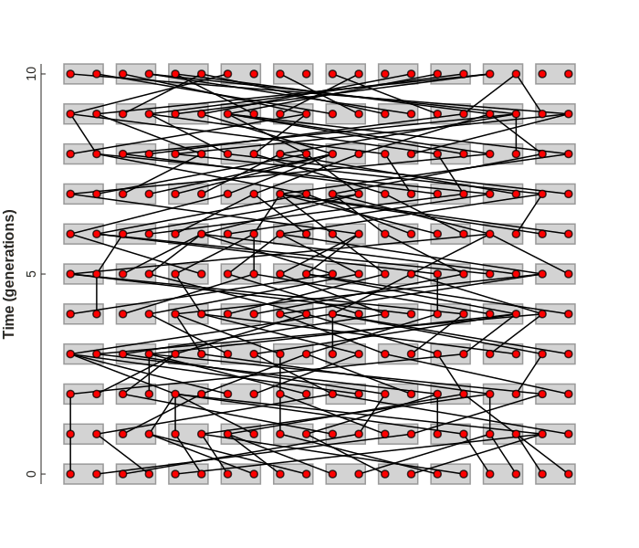
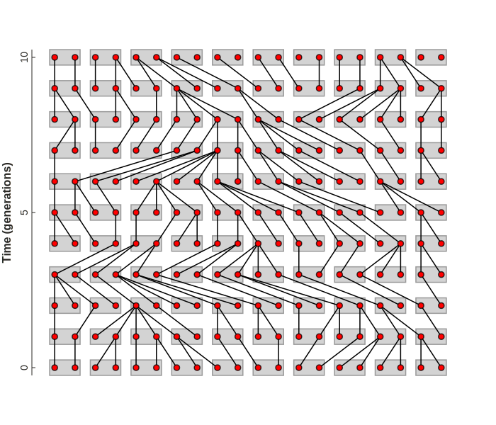
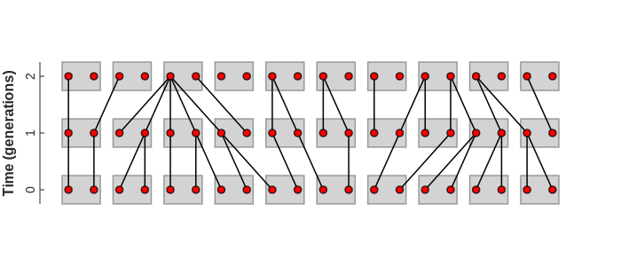
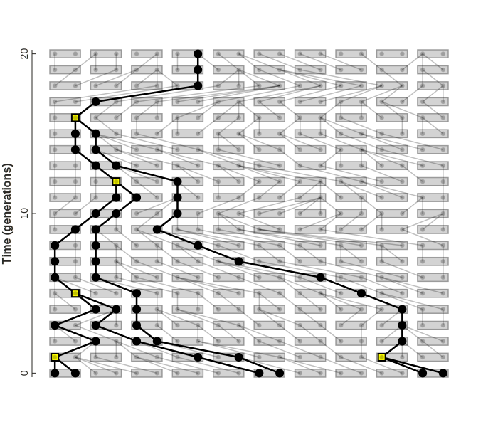

Wright-Fisher¶
Under Construction¶
Learning objectives¶
By the end of this lesson you will be familiar with:
- The Wright-Fisher (WF) process model.
- Assumptions underlying this model.
- calculating the probability two gene copies share a parent.
- extensions of this probabilistic thinking to studying genealogies.
Wright-Fisher Process¶
The Wright-Fisher process is considered one of the simplest models in population genetics. Compared to an idealized population, in which allele frequencies are always in HW equilibrium, and do not change, the WF process by default relaxes at least one assumption: population sizes are not infinite.
The introduction of finite population sizes allows for allele frequencies to change over time, as genetic drift will cause an allele to randomly become either entirely fixed, or lost with the rate of fixation being a function of the population size. In this lesson we will write code to simulate and visualize a population evolving under a WF process, and to understand how population size affects not only the rate of genetic drift, but also the genealogical relationships among samples, and ultimately, the concept that these two results are linked. Before we proceed, however, it is important to discuss some terminology.
Visualizing the WF process¶
To help understand WF models and their connection to genealogies it is
helpful to visualize stochastic outcomes of a WF process. The following
visualizations are created using toyplot, and you can learn more about
the visualization code in the next [code lesson]. Here we will simply use
the WrightFisherPlot class from the dropdown below to generate and draw
WF process outcomes. This takes a seed parameter for a random number
generator to produce different outcomes.
WF process visualization code using toyplot
from typing import Optional, Dict, List, Union
import numpy as np
import toyplot
class WrightFisherPlot:
def __init__(self, time=20, popsize=20, width: int=500, height: int=500, seed: Optional[int]=None):
self.rng: np.random.Generator = np.random.default_rng(seed)
self.grid: np.ndarray = np.arange(popsize * 2 * time).reshape((time, popsize * 2))
self.edges: np.ndarray = None
self.canvas: toyplot.Canvas = toyplot.Canvas(width=width, height=height)
self.axes: toyplot.coordinates.Cartesian = None
self._setup_axes()
self.marks: Dict[str, 'toyplot.Mark'] = {}
# get node coordinates
ys, xs = np.where(self.grid > -1)
self.coords = np.column_stack([xs, ys])
def _setup_axes(self):
# setup the canvas and axes
self.axes = self.canvas.cartesian(xshow=False, ylabel="Time (generations)", margin=70, padding=25)
self.axes.y.ticks.labels.style["font-size"] = 14
self.axes.y.label.style["font-size"] = 16
self.axes.y.label.offset = 30
self.axes.y.ticks.locator = toyplot.locator.Extended()
self.axes.y.ticks.show = True
def add_haploids(self, **kwargs):
"""Add circle marks for gene copies."""
style = {
"marker": "o",
"color": "white", #toyplot.color.Palette()[1]
"size": self.canvas.width / self.grid.shape[1] / 7.5,
"mstyle": {"stroke": "black", "stroke-opacity": 0.75, "stroke-width": 1.5},
}
style.update(kwargs)
self.marks['haploids'] = self.axes.scatterplot(
self.coords[:, 0], self.coords[:, 1],
**style,
);
def add_diploids(self):
"""Adds a rectangle around pairs of gene copies to represent a diploid individual."""
self.marks['diploids'] = self.axes.rectangle(
self.coords[:, 0][::2] - 0.25,
self.coords[:, 0][::2] + 1.25,
self.coords[:, 1][::2] - 0.25,
self.coords[:, 1][::2] + 0.25,
style={"fill": "lightgrey", "stroke": "grey", "stroke-opacity": 0.75, "stroke-width": 1.5},
);
def add_lines(self, sort: bool=True, **kwargs):
"""Adds lines from gene copies to randomly sampled parent gene copies each generation.
"""
# iterate over each generation adding pairs of node indices
for gen in range(0, self.grid.shape[0] - 1):
# children idxs span from left to right
lower_idxs = self.grid[gen]
# randomly sample parent idxs (some have many children, some none)
upper_idxs = self.rng.choice(self.grid[gen + 1], size=self.grid[gen + 1].size, replace=True)
# get sorting index for the upper idxs
if sort:
order = np.argsort(upper_idxs)
else:
order = np.arange(upper_idxs.size)
# update array of edges
iedges = np.column_stack([lower_idxs, upper_idxs[order]])
if self.edges is not None:
self.edges = np.concatenate([self.edges, iedges])
else:
self.edges = iedges
# style the graph
style = {"vlshow": False, "ecolor": "black", "ewidth": 1.5, 'vsize': 0, 'estyle': {}}
style.update(kwargs)
# add graph lines from lower_idxs to upper_idxs, using coordinates for all
self.marks['genealogy'] = self.axes.graph(
self.edges,
vcoordinates=self.coords[sorted(np.unique(self.edges))],
**style,
);
def add_sampled_lines(self, samples: Union[int, List[int]], **kwargs):
"""Add sampled genealogy lines from N random samples, or a list of sampled indices."""
if isinstance(samples, int):
nsample = min(samples, self.grid.shape[0])
samples = list(self.rng.choice(self.grid[0], size=samples, replace=False))
# base styles for the graph
style = {"vlshow": False, "ecolor": toyplot.color.Palette()[0], "ewidth": 2, 'vsize': 0, 'estyle': {}}
style.update(kwargs)
# get selected edges to show
tracked = samples.copy()
for e in self.edges:
if e[0] in tracked:
tracked.append(e[1])
# subset the edges to graph
mask = np.isin(self.edges[:, 0], tracked)
edges = self.edges[mask]
# apply unique color to coalescent events
if 'vcolor' not in style:
vcolors = []
vmarkers = []
for v in sorted(np.unique(edges)):
if sum(edges[:, 1] == v) > 1:
vcolors.append('yellow')
vmarkers.append("s")
else:
vcolors.append('black')
vmarkers.append("o")
style.update({
'vcolor': vcolors,
'vstyle': {'stroke': 'black', 'stroke-width': 2},
'vmarker': vmarkers,
})
# add graph lines from lower_idxs to upper_idxs, using coordinates for all
self.marks['genealogy'] = self.axes.graph(
edges,
vcoordinates=self.coords[sorted(np.unique(edges))],
**style,
);
Simulating WF process¶
A WF process can be simulated quite easily. It is a discrete-time process where each generation 2N haploid gene copies exist in a population of census size N. Because the population is assumed to be randomly mating we can randomly assign haploid gene copies to be grouped into diploid individuals. This grouping has no effect on how the model operates unless some other model assumptions were to be relaxed, and is thus only for visualization purposes. To simulate one generation of the WF process one needs only to create a new generation of 2N haploid copies and to randomly 2N copies, with replacement, from the previous generation to serve as their parents.
The result of this random mating process, played out over multiple generations, looks like the plot below. The process gives rise to a genealogy of gene copies. Lines are drawn to connect gene copies in each generation from parent to offspring. Grey rectangles represent diploid individuals, which contain two gene copies, represented by red circles.
# example WF plot
wf = WrightFisherPlot(seed=123, time=11, popsize=10, width=700, height=500)
wf.add_diploids()
wf.add_lines(sort=False)
wf.add_haploids(color="red", size=8)

Interpreting WF genealogies¶
This process is much easier to comprehend when the edges are sorted so that they are easier to read. Remember, however, that regardless of this sorting for visualization purposes, that the parent copy of each gene copy is still being randomly sampled each generation. This visualization thus retains the same probability of a gene copy leaving descendants to the next generation, but is biased in the appearance of greater selfing (one or both copies in an individual ending up together in an individual in the next generation). Thus the outlines of the diploid individuals could be hidden at this point, after sorting the edges, to be more accurate.
Time in this model flows from top to bottom, such that the gene copies at time=0 represent the present, and the ancestors of these gene copies, as well as other gene copies that did not leave descendants, exist in past generations (gens 1 - 11 in this visualization).
# example WF plot with sorted edges for visualization
wf = WrightFisherPlot(seed=123, time=11, popsize=10, width=700, height=500)
wf.add_diploids()
wf.add_lines(sort=True)
wf.add_haploids(color="red", size=8)

Understanding the flow of time in these diagrams is very important, and can sometimes be challenging, since different authors may present the same type of figure flowing top to bottom, or bottom to top. Fortunately, there is a simple trick to easily identify the flow of time, which is to identify the direction in which every node has an edge flowing. That direction will be backwards in time. This is because every gene copy has an ancestor, but not every gene copy will leave descendants. The latter outcome is a consequence of genetic drift, where a random sampling process will cause some gene copies to leave multiple descendants, while others will leave none.
The plot below zooms in on just the final three generations of a WF process simulation. You can see that every gene copy has an edge pointing up (backwards in time), but many gene copies do not have an edge pointing down.
As we said earlier, mating occurs randomly in this model, without regard to the way in which gene copies are grouped inside of diploid individuals. Consequently, it is possible for odd mating strategies to occur, such as selfing.
In the figure below, generated with the random seed 123, look at the first two individuals from the left in generation 0. The first inherits the same two gene copies that were present in an individual in the previous generation. The second inherits two copies of a single gene copy that was present in an individual in the previous generation. The first is a representation of diploid selfing, and the second a form of haploid selfing. This visualization in fact has a greater representation of selfing that would be expected under random mating, since the edges are sorted for visualization purposes.
Although this represents a form of inbreeding, it would be an expected level of inbreeding in a population of this effective population size, if it was generated by random mating. A non-random mating strategy, by contrast, may lead to more or less inbreeding than this expectation, by perhaps preventing selfing, or incorporating behavior or geography into mating. The simple WF process thus provides a null expectation against which to compare.
# example WF plot with sorted edges for visualization
wf = WrightFisherPlot(seed=123, time=3, popsize=10, width=700, height=300)
wf.add_diploids()
wf.add_lines(sort=True)
wf.add_haploids(color="red", size=8)

Genealogy of samples¶
A consequence of this simple discrete random sampling process, repeated over multiple generations, is that any gene copy that exists at the present can trace back a tree-like genealogical history with any other gene copy at the present. As an example, we can randomly sample 5 gene copies at the present and focus on their individual ancestries. As we can see, they each trace back some number of generations before they eventually share a common ancestor; an ancestral gene copy from which they are all descended.
This is demonstrated below. Here we sample 6 gene copies in total, coming from 3 diploid individuals (which we'll refer to as individuals 1, 2, and 3, from left to right), which are shown in bold compared to unsampled gene copies and their ancestors. The common ancestors of sampled gene copies are highlighted as yellow squares. All of the 6 gene copies that we sampled in this scenario coalesce into a single common ancestor gene copy at time=16 (16 generation back from the present). The two gene copies in individuals 1 and 3 each share a MRCA just one generation back from the present. However, the two gene copies in individual 2 do not share a common ancestor until generation 12. In fact, one of the gene copies from this individual coalesces with the common ancestor of the gene copies of individual 1 long before it coalesces with the other gene copy present in the same individual.
# example WF plot with sampled tips genealogy
wf = WrightFisherPlot(seed=444, time=21, popsize=10, width=700, height=600)
wf.add_diploids()
wf.add_lines(sort=True, eopacity=0.25)
wf.add_sampled_lines(samples=[0, 1, 10, 11, 18, 19], ecolor="black", ewidth=2.5, vsize=10)
wf.add_haploids(color="black", size=5, opacity=0.25)

Coalescence¶
Sewall Wright noted that in a finite population evolving under a WF process
the probability that two random gene copies will share a common ancestor
in the previous generation is 1/2N, since there are 2N gene copies in
the population. This type of event, where two descendant gene copies merge
into a common ancestor, when viewed backwards in time, is termed a
coalescence. It turns that this view of population histories, in the form
of probabilistic statements about common ancestry, can be a very powerful
way to describe evolution in populations. In fact, an entire
statistical framework has been developed to study populations based on
probabilistic expectations for the time and its variance until
some number of samples coalesce, called Coalescent Theory. This is the
subject of the next lesson.
Summary¶
- A Wright-Fisher process, or model, is a discrete-time process of reproduction in an idealized population of finite size over multiple generations.
- Interpreting a WF-process plot requires understanding the direction of time, and which gene copies are ancestors or descendants of others.
- The WF process gives rise to genealogical relationships among gene copies.
- All gene copies in a population will eventually coalescent to a common ancestor.
- The probability that two gene copies share a common ancestor 1 generation
ago is
1 / 2Ne.